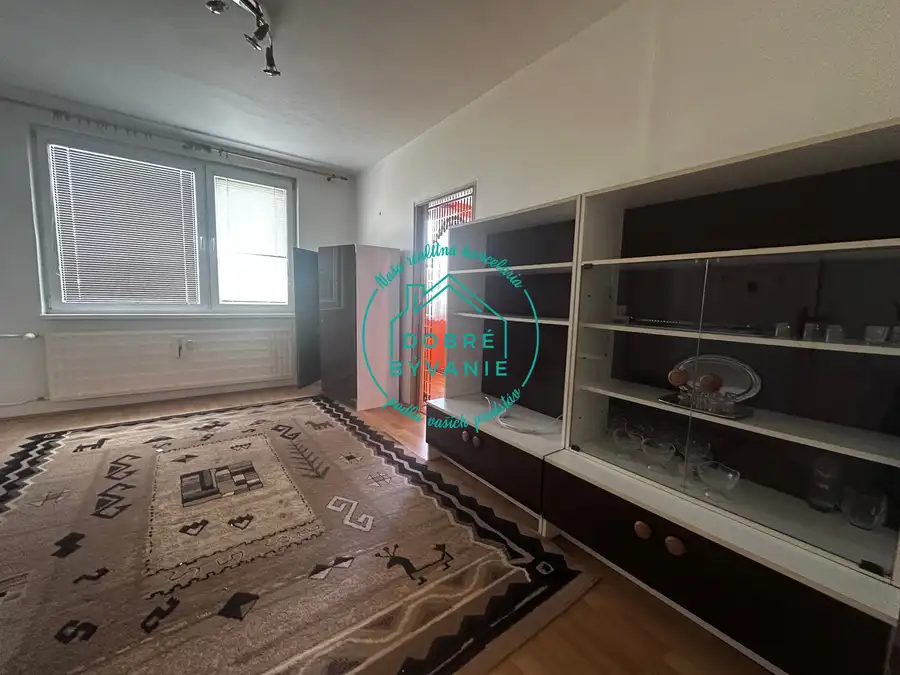
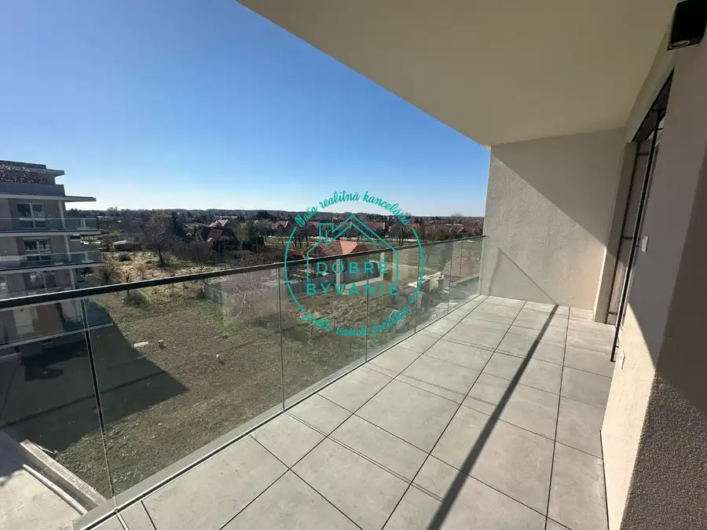
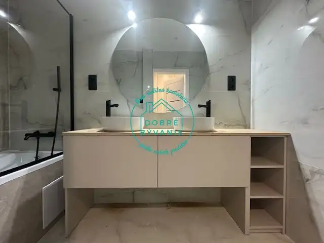

Exkluzívne iba u nás - Novinka! Na predaj Novostavba Rodinných Domov
Nové Zámky
- Plocha110 m²
- StavVo výstavbe
- VlastníctvoOsobné
- Energetická triedaA
O nehnuteľnosti
Predstavujeme radovú výstavbu rodinných domov v novovybudovanej lokalite v Nových Zámkoch. Máte poslednú šancu, tak ju nepremeškajte. Moderná, unikátna tehlová stavba 4 izbového rodinného domu o rozlohe 110m2 ucelenosť tohto projektu môžete vidieť v pôdoryse.4 izbová Novostavba rozdelená na dennú a nočnú časť, vhodná pre rodiny s deťmi alebo pre jednotlivca. Rozdelenie:Prízemie: zádveriešatníktechnická miestnosťwcšpajzakuchyňa spojená s obývacou časťouvýstup na terasuschodiskoPoschodie:3x izbašatníkchodbakúpeľňa s wcÚtulné a praktické riešenie pre Váš nový domov. Zabezpečenie dostatočne úložného priestoru, otvorená denná časť, a popritom zabezpečenie dostatočného súkromia.Pri včasnom rozhodnutí je možnosť posúvania interierových priečok a rôznych stavebných úprav po dohode so stavebným dozorom. Zastavaná plocha 139m2 - záhrada má výmeru 273m2, pred domom je možnosť státia pre 3 autá.Technická špecifikácia:Ide o tehlovú stavbu s pevnými základmi, obvodové murivo tehla brúsená Wienerberger 300 mm, montáž stropu prvé podlažie keramický / železo betónový, montáž stropu druhé podlažie drevené trámy, izolácia 200 mm Knaufmontáž stropu – sadrokartón, izolácia stropu 400 mmschodisko - železo betónové schodyvnútorné priečky - a priečok tehla Wienerberger 115 mm na penustrecha - zo železobetónového vencastrecha rovná izolácia tepelná spádovaný polystyrén, fólia Fatrafol dodanie zvodového systému KJG- vnútorné omietky, maľovka, príprava na laminátové podlahy a keramickú dlažbu, okná 3 sklá podľa EU noriem a certifikátu A0- fasáda - zateplenie obvodového muriva – polystyrén 200 mm montáž soklu – styrodur 50 mmfasádna omietka Ceresit – farba sa zvolí pred aplikáciouV cene nie sú zahrnuté prípojky, kolaudácia, vonkajšie úpravy, stavba bude odovzdaná vo fáze Holodomu.Postup financovania - počiatočná rezervácia, ďalšia platba až financujúcou bankou. viac informácií v RK, alebo na telefónnom čísle 0940 588 886cena 179 000 €V prípade záujmu volajte realitnú maklérku Kristinu Nagyovú t.č. 0940 588 886 Realitná kancelária Dobre Bývanie www.dobrebyvanie.net nagyova@dobrebyvanie.net Sme s Vami od začiatku až do samého konca! U nás máte kompletný realitný servis v cene, vrátane znaleckého posudku! Pomôžeme s kolaudáciou rodinných domov.
Parametre
| Bezpečnosť | Bezpečnostné dvere |
|---|---|
| Druh | Rodinný dom |
| Druh domu | Klasický dom |
| Dátum zverejnenia | 7. 10. 2021 |
| Energetická náročnosť | Nízkoenergetický |
| Energetický certifikát budovy | A |
| Orientácia | Juhovýchodná |
| Plocha pozemku | 267 m² |
| Podpivničenie | Nedostupné |
| Počet izieb / miestností | 4 |
| Počet kúpeľní | 1 |
| Počet nadzemných podlaží | 2 |
| Prístupová komunikácia | Betónová |
| Rok kolaudácie | 2022 |
| Rok výstavby | 2021 |
| Stav nehnuteľnosti | Vo výstavbe |
| Terén pozemku | Rovinatý |
| Typ | Predaj |
| Typ konštrukcie | Tehlová |
| Vlastníctvo | Osobné |
| Vybavenie | Predzáhradka, Terasa, Sklad, Technická miestnosť, Vonkajšie parkovacie miesto |
| Vykurovanie | Podlahové, Krb |
| Úžitková plocha | 110 m² |
Kde to je


Mohlo by Vás zaujímať

BytNové5 134 000 €Exkluzívne na predaj 3 Izbový byt v Šuranoch Šurany 3-izbový78 m²1. podlažie Ponúkam na predaj 3 Izbový byt s výmerou 78m2 v meste Šurany. Byt má plastové okna a disponuje komorou, pivnicou a balkónom. Všetka občianska…
BytNové10 Cena dohodouNadštandardný zariadený 3 izbový byt v Soho s garážovým státím Nové Zámky 3-izbový138 m² Ponúkame Vám na prenájom kompletne zariadený 3 izbový byt s krásnym výhľadom, nadštandardnou terasou.V jedinečnej modernej štvrti v Nových Zámkoch s…
BytNové8 Cena dohodouNovinka! Prenájom 2 izbový byt v centre mesta Nové Zámky 2-izbový60 m²1. podlažie Exkluzívna ponuka, Nadštandardne vybavený 2,5 izbový byt v tehlovej bytovke v centre mesta. Byt prešiel kompletnou rekonštrukciou 2025, vybavenie…